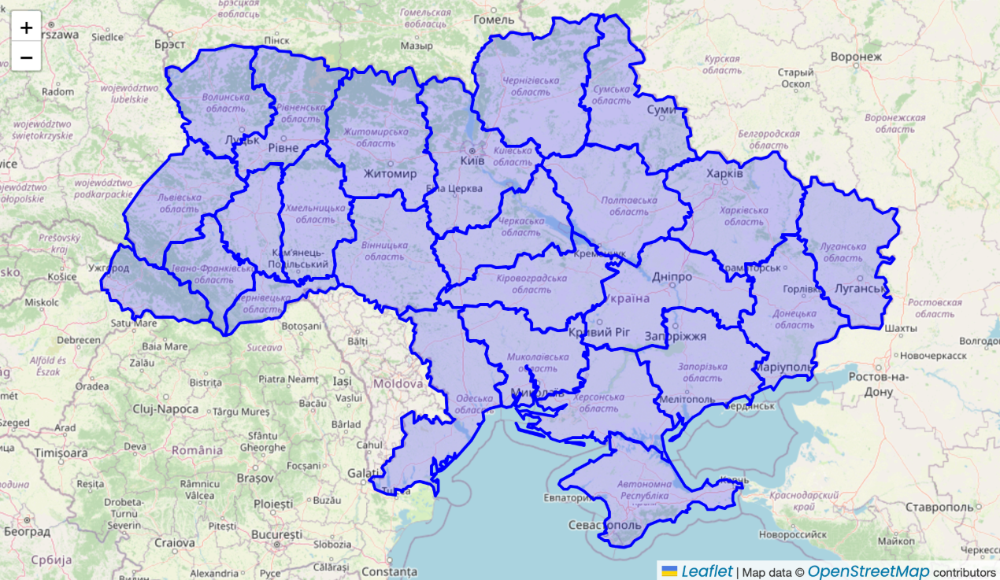
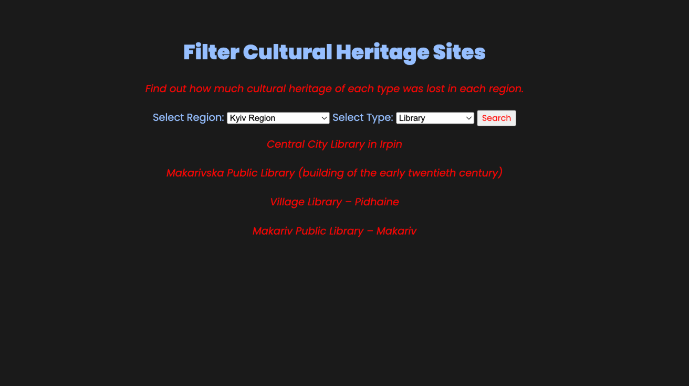

UX Researching | UX Writing | UX/UI design | Prototyping | Web Development
The Russian invasion of Ukraine has caused extensive damage to cultural heritage sites. This project aims to bridge the knowledge gap by creating an interactive website for documenting and presenting these losses.
Develop an intuitive platform using PHP, MySQL, JavaScript, and responsive design to highlight the scale of cultural heritage destruction.
The website consists of three main pages:
Home Page: Highlights key statistics and visuals.
Interactive Map: Displays regional data with zoom and hover functionalities.
Filter Page: Allows users to search for specific types of cultural heritage sites by region or category.
Interactive Map: implemented using Leaflet.js and AJAX, the map dynamically showcases regions and provides details on cultural heritage damages.
Map page
Filter Page: users can filter heritage data by region or type, providing an intuitive search experience without reloading the page.
Filter page
While developing the website, several technical challenges arose, particularly with AJAX implementation for seamless data updates and designing an intuitive filtering system. Researching additional features like adding all site locations to the map required advanced coding skills and more time than anticipated.
See the result here.